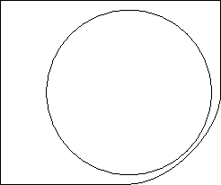
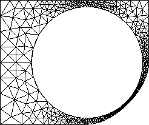

Next: Input and output mesh Up: File Formats Previous: File Formats Contents
Two-dimensional domains are specified using a geometry (.bdry) file. This file format supports simultaneous and consistent meshing of multiple sub-domains and is extensible to non-polygonal boundaries, using the boundary patches described below.
The first line of the file contains the following:
The NPatches boundary patch descriptions follow the vertex coordinates. The descriptions use the following format:
Note that a patch can have a subdomain on both sides, but not a boundary on both sides. We are aware that the ability to specify boundary conditions on internal boundaries is sometimes necessary (our current favorite example involves radiative heat transfer onto a surface). While there are plans to add this capability in future versions of GRUMMP, there is no simple way to do this at present.
The [extra_info] varies depending on the boundary patch type. It usually consists of a list of point indices. Note that the point numbering starts at zero. Here is the required format for all possible boundary patches.
The format for [extra_info] is:
numberpoints points
where numberpoints is the number of points used to describe the polygonal boundary. Then follow numberpoints indices to the points described at the beginning of the file. Note that at least two points must be given. This will result in numberpoints-1 polygonal segments.
Example:
polyline r 1 b 2 5 0 1 2 3 0
This will create a closed polygon of 4 segments, with the segments defined by vertices 0-1, 1-2, 2-3, and 3-0. Region 1 is located to the left of the segments, and the boundary condition on the right has a value of 2.
The format for [extra_info] is:
radius centerpoint
where the radius is a real number and the centerpoint is an integer index to a point defined at the beginning of the file.
Example:
circle b 1 r 2 3.40 7
This will create a circle of radius 3.40, centered at the location defined by point 7. The sides of the circle are defined by walking counter-clockwise on the circle, so the left side is the interior, and the right side the exterior. Here, region 2 is to be meshed and is located outside the circle. The inside will not be meshed, and has a boundary condition number of 1.
The format for [extra_info] is:
radius startpoint endpoint
where radius is a real number and both startpoint and endpoint are indices to points defined earlier in the file. The coordinates for the center of the arc are determined automatically. The arc is always drawn counter-clockwise, from startpoint to endpoint. Furthermore, the arc drawn will always span 180° or less. For arcs of more than 180°, use longarc instead.
Example:
arc r 3 r 2 1.0 0 1
This will draw a circular arc of radius 1.0, from the point with index 0 to the point with index 1. The arc is drawn counter-clockwise and spans less than 180 degrees. The arc will be an internal boundary since it has both regions 3 and 2 as neighbors.
The format here is the same as for arcs; the difference is in interpretation. A longarc is drawn counterclockwise from startpoint to endpoint, but it always spans 180° or more. For arcs of less than 180°, use arc instead.
The format for [extra_info] is:
startpoint endpoint controlpoint1 controlpoint2
where all the parameters are indices to points defined at the beginning of the file. The Bézier curve will be a smooth curve with a tangent in the direction of the vector defined by controlpoint1-startpoint at its start, and a tangent in the direction of the vector endpoint-controlpoint2 at its end.
Example:
bezier r 1 b 2 4 6 8 10
This will create a Bézier curve defined by points with indices 4, 6, 8, and 10, and will have region 1 to its left, and the domain boundary on its right, with a boundary condition of 2.
The format for [extra_info] is the same as for polyline, that is:
numberpoints points
where numberpoints is the number of points used to describe cubic interpolated spline. Then follow numberpoints indices to the points described at the beginning of the file. Note that at least three points must be given (otherwise the spline simply is a line). The spline is created with “no-moment” boundary conditions, i.e. the second derivative of the curve is zero at both ends. The curve will pass through all the points given.
Example:
spline b 2 r 4 10 0 1 2 3 4 5 6 7 8 9
This will create an open cubic spline, starting at point 0 and ending at point 9. The curve will also pass through points 1..8. Region 4 is located to the right of the spline, and the boundary condition on the left has a value of 2.
A sample input file, a picture of the underlying geometry, and the mesh generated from this input using tri -r 2 -g 2 are shown in Figure 3.1. The input contains eight points and six patches, four in a single polyline, one circle, and one Bézier curve. This input file is square-circhole-bezier.bdry in examples/2D.
 
|